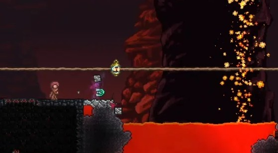
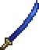
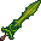
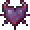
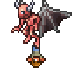

The gear you have obtained and the arena you have created will be very useful, now get out there and win!
Part Five: The Wall of Flesh Melee | ||||
|---|---|---|---|---|
| Long Preparations | Boss Fight #4 | |||
|  To prepare for your next foe, the best precaution I can give is to create a long bridge through the underworld. A lot of this fight will be you running away, so the best way to do that is by giving yourself lots of room to do so. |
 After building the bridge, find an imp holding a guide doll. You will need to take the doll from it and throw it into the lava to start the fight. |
|||
Notable Items |
|||||
|---|---|---|---|---|---|
 Night's Edge |
|||||
Crafting |
|||||
Volcano  Muramasa Blade Of Grass Light's Bane  |
|||||
Notable Items [Expert/Master Mode] |
|---|
|  |
Expert Drop |
 |
Notable NPCs |
|---|
Notable Enemies/Bosses |
|
|---|---|
|  | |
|
|